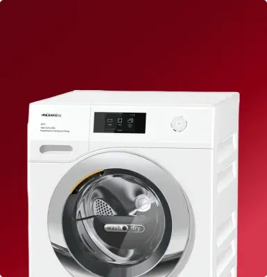
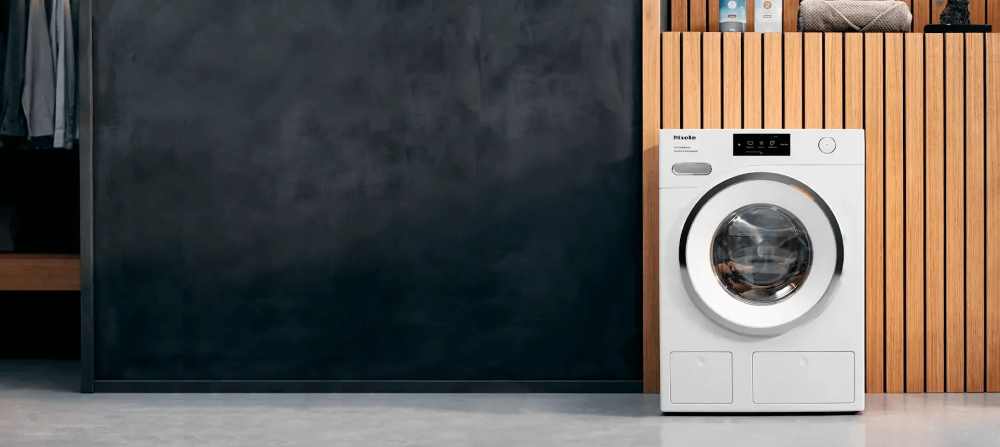
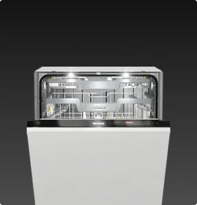
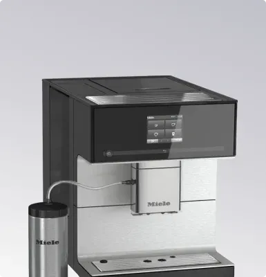
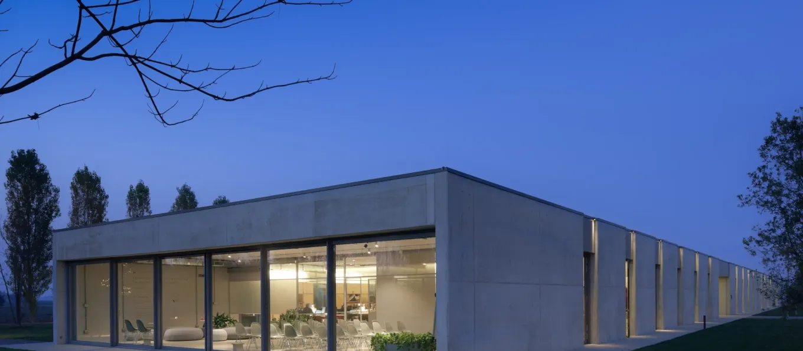

M
Miele Electronics
оригинальная техника Miele с 2015 года
Шоурум
Москва, ул. Краснопрудная, 15, ТЦ «Краснопрудный»
Ежедневно с 10:00 до 22:00
8 (800) 222-66-66Техника Miele под вашу нишу
Подберём модель по размерам и задаче — без звонка, если вы этого не хотите
Подобрать за 7 вопросов ↗Ответим и пришлём подборку с ценами
Или сразу звоните: 8 (800) 222-66-66

При покупке техники от 30 000 ₽ — набор премиальной химии Miele в подарок
Гарантия 2 года от магазина
А
Александра
консультант Miele Electronics
отвечает за минуту
Здравствуйте! Помогу подобрать технику Miele под вашу задачу.
Семь коротких вопросов — и менеджер пришлёт подборку с наличием и ценами. Без звонка, если не захотите.
Вопрос 1 из 7
Что вас интересует?
Вопрос 2 из 7
Исполнение — встраиваемое или отдельно стоящее?
Вопрос 3 из 7
Какие габариты нужны? Можно просто ширину — или индекс модели, если он уже есть.
Вопрос 4 из 7
Мебель уже заказана?
Вопрос 5 из 7
Откуда вы? От этого зависят доставка и сроки.
Вопрос 6 из 7
Когда планируете покупку?
Вопрос 7 из 7
На какой бюджет ориентируетесь?
Спасибо! Передаю менеджеру — он сверит наличие по складу и пришлёт подборку с ценами.
Куда отправить? Напишите номер — менеджер свяжется в мессенджере или позвонит, как вам удобнее.
Что подбираем чаще всего
Вся техника — оригинальная, с гарантией 2 года и документами.


Не знаете, что подойдёт?
Назовите размеры ниши — менеджер отсечёт то, что не встанет, и пришлёт варианты с ценами.

Четыре шага до доставки
Работаем с 2015 года — за это время собрали кухни 12 000 семьям.
Шаг 1 — ЗаявкаОтвечаете на вопросы в чате или оставляете телефон. Отвечаем ежедневно с 10:00 до 22:00.
Шаг 2 — Подбор по нишеСверяем габариты и наличие на складе, присылаем варианты с ценами и сроками.
Шаг 3 — ОформлениеФиксируем цену письменно. Гарантийный талон, чеки и документы — на каждый прибор.
Шаг 4 — ДоставкаПо Москве и Петербургу бесплатно, по России — транспортной компанией. Меню и инструкции русифицированы.
Контакты
⌖Москва, ул. Краснопрудная, 15, этаж 2, ТЦ «Краснопрудный»
⌖Санкт-Петербург, Лиговский проспект, 30, этаж 3
◷Ежедневно с 10:00 до 22:00
Подобрать ↗Нажимая кнопку, вы соглашаетесь с обработкой персональных данных.